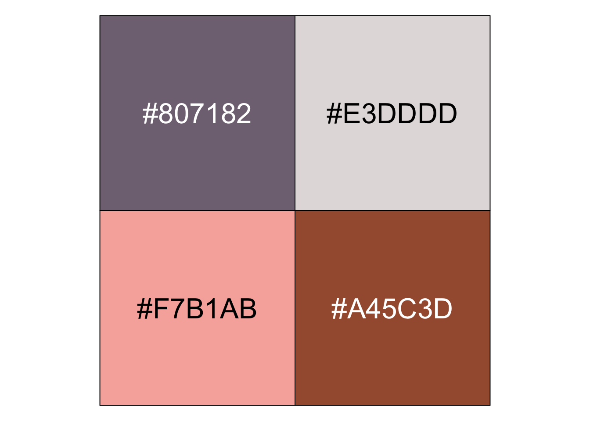
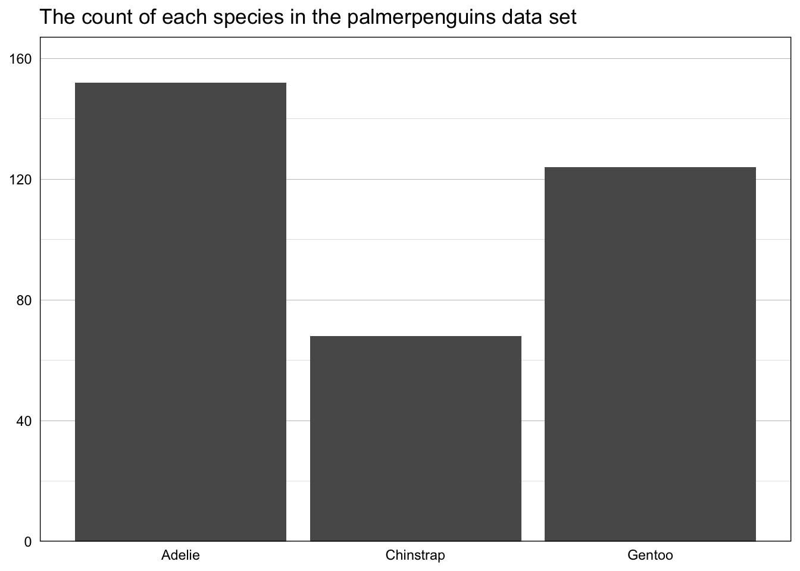
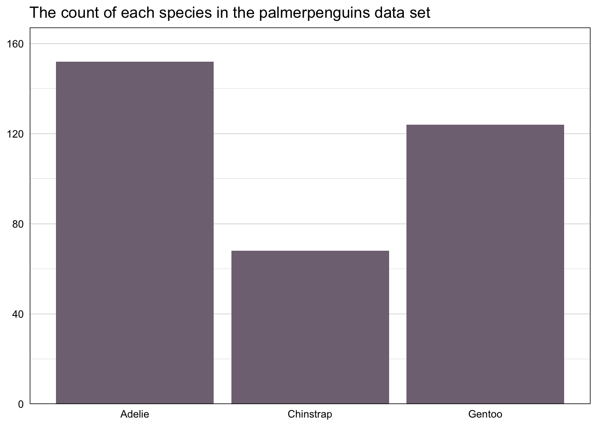
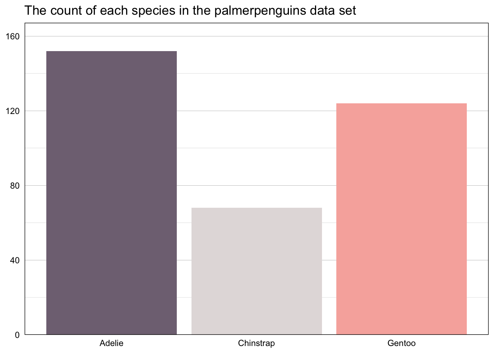
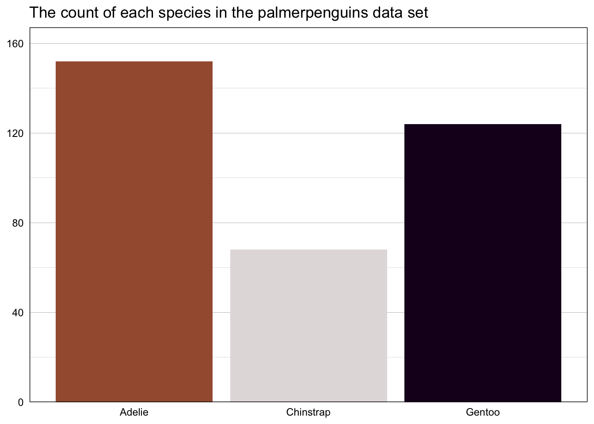
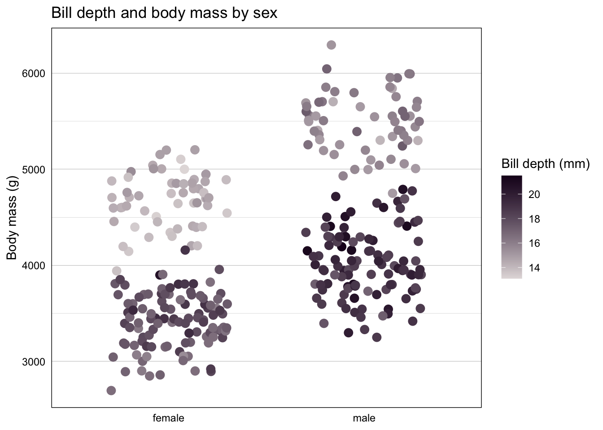

library(tidyverse)
library(palmerpenguins)
penguins <- palmerpenguins::penguinsWhy custom palettes?
One of the perks of making data visualizations in ggplot2 is that nearly everything is easily customizable, meaning your plots can stick to a common style with the fonts and elements specified by your organization’s or your own personal style guide (hopefully you have a custom theme to make this easier!). When it comes to using colors in data visualizations, if you find yourself typing in the same hex codes often enough that you start to memorize them—speaking from experience here—it’s probably time to codify those colors and palettes so you can reference them more easily when creating plots. The examples below will show you how to specify colors and palettes and then use those palettes to create your own scale_color and scale_fill functions for use in plots, for both discrete and continuous data.
This blog post by Simon Jackson and this one by Garrick Aden-Buie were both incredibly helpful in helping me figure out how to do this. I somewhat combined their approaches to get this method that worked for my needs, and hopefully either this method or one of theirs is helpful for you!
Defining custom colors and palettes
These examples use the penguins data set from the wonderful palmerpenguins package. Let’s imagine that you work for Penguin Corp and regularly create reports and visualizations with various penguin-related data. Penguin Corp has a style guide that specifies the colors and palettes that should be used, and while you can always specify the colors manually in ggplot2 visualizations, it’s much easier to define the colors and palettes and then reference them through your own scale_fill and scale_color functions. (These are all functions that can be dropped easily into an internal package!)
First, start by defining the various colors you need.
penguin_corp_color <- function(...) {
penguin_corp_colors <- c(
`pink` = "#F7B1AB",
`lavender` = "#807182",
`gray` = "#E3DDDD",
`brown` = "#A45C3D",
`purple` = "#1C0221")
cols <- c(...)
if (is.null(cols))
return (penguin_corp_colors)
penguin_corp_colors[cols]
}That function can be used to show the definition of a specific color:
penguin_corp_color("lavender") lavender
"#807182" That penguin_corp_color function then becomes the base of the penguin_corp_palette function below, where those defined colors are combined into palettes. Your organization might have primary and secondary palettes, or palettes designed for specific uses, but here we’ll define a main palette as well as a highlight palette for when we want just two colors.
penguin_corp_palette <- function(palette = "main", ...) {
penguin_corp_palettes <- list(
`main` = penguin_corp_color("lavender", "gray", "pink", "brown"),
`highlight` = penguin_corp_color("purple", "gray")
)
penguin_corp_palettes[[palette]]
}penguin_corp_palette("main") lavender gray pink brown
"#807182" "#E3DDDD" "#F7B1AB" "#A45C3D" The show_col function from the scales package is a nifty way to showcase all the colors available in a given palette:
scales::show_col(penguin_corp_palette("main"), cex_label = 2)
Creating your own scale_color and scale_fill functions
Having the colors and palettes defined is a great first step, but you can go even further and apply those into your own scale_fill and scale_color functions. The first step is a helper function, here called palette_gen. This function has two arguments, the name of the palette (“main” will be our default) and the direction (so you can flip the scale if necessary), and essentially creates another function that will be used in the scale_fill and scale_color functions. (The n there refers to the number of colors that would be needed for a particular plot.)
palette_gen <- function(palette = "main", direction = 1) {
function(n) {
if (n > length(penguin_corp_palette(palette)))
warning("Not enough colors in this palette!")
else {
all_colors <- penguin_corp_palette(palette)
all_colors <- unname(unlist(all_colors))
all_colors <- if (direction >= 0) all_colors else rev(all_colors)
color_list <- all_colors[1:n]
}
}
}The function above is for discrete color scales. If you also want to use continuous color scales, the function below uses the existing colorRampPalette function to interpolate the necessary colors between the ones you have chosen in your palette.
palette_gen_c <- function(palette = "main", direction = 1, ...) {
pal <- penguin_corp_palette(palette)
pal <- if (direction >= 0) pal else rev(pal)
colorRampPalette(pal, ...)
}With that helper function created, you can write the actual functions to be used with ggplot2. I’ve called mine scale_fill_penguin, which takes the same two arguments as before: palette and direction.
scale_fill_penguin <- function(palette = "main", direction = 1, ...) {
ggplot2::discrete_scale(
"fill", "penguin",
palette_gen(palette, direction),
...
)
}You can use the same syntax for scale_color. (Fun fact: I learned from Garrick’s post that the ggplot2 convention is to create a scale_colour function and then replicate it as scale_color.)
scale_colour_penguin <- function(palette = "main", direction = 1, ...) {
ggplot2::discrete_scale(
"colour", "penguin",
palette_gen(palette, direction),
...
)
}
scale_color_penguin <- scale_colour_penguinAgain, those are for discrete color scales. If you need a continuous scale, use a function like this:
scale_color_penguin_c <- function(palette = "main", direction = 1, ...) {
pal <- palette_gen_c(palette = palette, direction = direction)
scale_color_gradientn(colors = pal(256), ...)
}Using these colors in plots
Let’s look at some examples to see the various ways these functions can be used to customize colors with ggplot2. Below is a very simple bar chart using the palmerpenguins::penguins data set.
penguins %>%
count(species) %>%
ggplot(aes(x = species, y = n)) +
geom_bar(stat = "identity") +
labs(title = "The count of each species in the palmerpenguins data set") +
scale_y_continuous(expand = expansion(mult = c(0, 0.1))) +
theme_here() +
theme(axis.ticks = element_blank(),
axis.title = element_blank(),
panel.grid.major.x = element_blank())
The new penguin_corp_color function can be used to specifically define a color. In the plot below, penguin_corp_color("lavender") is the fill argument in the geom_bar layer to make all of the bars that specific shade of lavender.
penguins %>%
count(species) %>%
ggplot(aes(x = species, y = n)) +
geom_bar(stat = "identity", fill = penguin_corp_color("lavender")) +
labs(title = "The count of each species in the palmerpenguins data set") +
scale_y_continuous(expand = expansion(mult = c(0, 0.1))) +
theme_here() +
theme(axis.ticks = element_blank(),
axis.title = element_blank(),
panel.grid.major.x = element_blank())
We could also add fill = species to the aes layer (meaning that each species will have its own color) and then use scale_fill_penguin(palette = "main") to automatically apply our “main” color palette.
penguins %>%
count(species) %>%
ggplot(aes(x = species, y = n, fill = species)) +
geom_bar(stat = "identity") +
scale_fill_penguin(palette = "main") +
labs(title = "The count of each species in the palmerpenguins data set") +
scale_y_continuous(expand = expansion(mult = c(0, 0.1))) +
theme_here() +
theme(axis.ticks = element_blank(),
axis.title = element_blank(),
legend.position = "none",
panel.grid.major.x = element_blank())
Or if you want to use the custom colors but not a specific palette, add a scale_fill_manual layer and specify the values using the penguin_corp_color function.
penguins %>%
count(species) %>%
ggplot(aes(x = species, y = n, fill = species)) +
geom_bar(stat = "identity") +
scale_fill_manual(values =
unname(c(penguin_corp_color("brown","gray","purple")))) +
labs(title = "The count of each species in the palmerpenguins data set") +
scale_y_continuous(expand = expansion(mult = c(0, 0.1))) +
theme_here() +
theme(axis.ticks = element_blank(),
axis.title = element_blank(),
legend.position = "none",
panel.grid.major.x = element_blank())
Lastly, below is an example of a continuous color scale, with our scale_color_penguin_c function specifying the palette to be used.
penguins |>
filter(!is.na(sex)) |>
ggplot(aes(x = sex, y = body_mass_g, color = bill_depth_mm)) +
geom_jitter(size = 3, width = 0.3) +
scale_color_penguin_c(palette = "highlight", direction = -1) +
labs(title = "Bill depth and body mass by sex",
y = "Body mass (g)",
color = "Bill depth (mm)") +
theme_here() +
theme(axis.ticks = element_blank(),
axis.title.x = element_blank(),
panel.grid.major.x = element_blank())